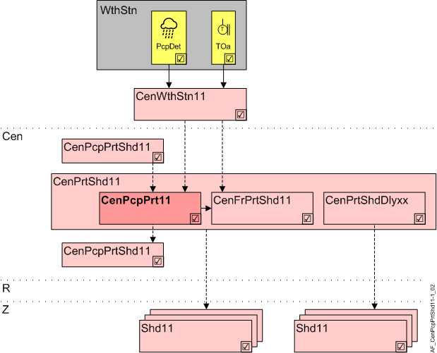

中央降水保护 (CenPcpPrt11)
Overview
应用功能》Central precipitation protection 11" (CenPcpPrt11）处理一个降水传感器。

WthStn | 气象站 |
PcpDet | 降水探测器 |
岑 | 中央职能 |
CenPrtShd11 | Central protection shading 11 |
CenPcpPrt11 | Central precipitation protection 11 |
CenPrtShdDlyxx | Central protection shading delay 11...13 |
R | 房间 |
Z | 一间房间内的遮阳区域 |
Shd11 | Shading 11, for shading and daylight use with venetian blinds or awnings、小组成员 |
Use
降水保护通常用于
- Awnings: To protect against the weight of the water and the elements
- Shading products made of cloth: Protect against the elements
- Motorized windows: Protect against rain
在下雨期间或传感器出现故障时，产品会转到已配置的安全位置。
无法进行保护，无法禁用 AF CenFrPrtShd11。
其他遮阳产品：AF 也是防冻功能的组成部分。该产品仅与雨水和外界温度一起发生反应。在“上配置降水和传感器故障的位置None" and enable AF CenFrPrtShd11.
Function
The AFreads来自一个中央降水传感器的降水警报，并通过开关延迟来减弱结果。提供结果（PcpDet）用于监控。
如果延迟已过，降水警报将自动重置，或者手动重置警报。
BACnet 配置对象用于通过 BACnet 进行手动重置。
The AFtransfers以下为 CenPrtShd11：
- A configurable blinds setting (CmdLmExc) in the event the limit value is exceeded.
- A configurable blinds position (CmdSenFlt) in case of a sensor fault (precipitation sensor reports "unreliable").
Interface to local and superordinate functions
本地输入和上级 AFs 访问相同的 BACnet 对象。按优先级评估。本地保护输入的优先级高于上级中央功能的屏蔽命令。
Configuration
应用 | 防雨保护 | 防冻保护 |
|---|---|---|
强制保护情况 | 沉淀 | 降水AND低温 |
可选保护情况 | 降水传感器故障 | 降水传感器故障 |
AF CenPcpPrt11 | 必需的 | 必需的 |
AF CenFrPrt11 | n/a | 必需的 |
超出限值的命令 (PcpPrt>CmdLmExc) | Open...Closed | None |
传感器故障命令 (PcpPrt>CmdSenFlt) | None, | None, |
超出极限值的命令 (FrPrt>CmdLmExc) | n/a | Open...Closed |
传感器故障命令 (FrPrt>CmdSenFlt) | n/a | None, |
 objects
objects
描述 | 对象 | 类型 | 默认值 |
|---|---|---|---|
Reset precipitation protection ▶ 对于 BACnet 上的手动复位 | RstPcpPrt | BCnfVal | 0 |
 Parameter
Parameter
描述 | 范围 | 默认值 |
|---|---|---|
Switch-on delay protection function 0...18000 [s] | DlyOnPrt | 100 [s] |
Switch-off delay protection function 0...50 [h] | DlyOffPrt | 3 [h] |
Command on limit exceed 1:None | CmdLmExc | 1:None |
Command on sensor fault 枚举见CmdLmExc | CmdSenFlt | 1:None |
Interface
界面 | 描述 | 类型 | 参考号 | 所有者 |
|---|---|---|---|---|
PcpDet | Precipitation detector | BI | ◉ | Central function / Device |
RstPcpPrt | Reset precipitation protection | BCnfVal | ● | - |
Engineering and commissioning
降水传感器的选择和配置以应用为导向：天窗的高灵敏度或遮阳篷和防冻保护的更高耐受性。
标准设置专为防冻保护而设计。